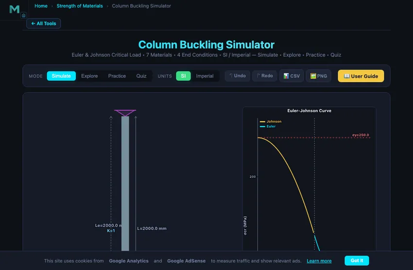
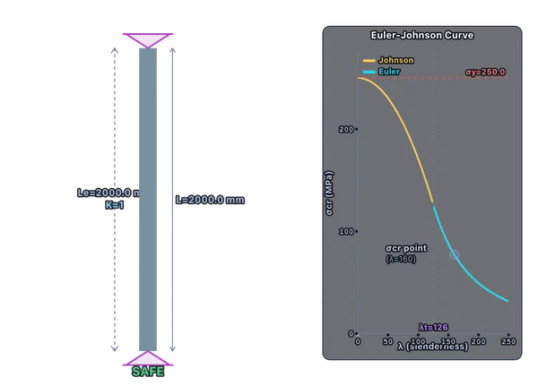

Column Buckling Calculator
Euler & Johnson Critical Load • 7 Materials • 4 End Conditions • SI / Imperial — Simulate • Explore • Practice • Quiz
Display Controls
Σ Live equations — values from current state
💡 What-if coach — insights from current values
1 Overview
The Column Buckling Simulator calculates the critical buckling load (Pcr) for compression members using both Euler’s formula and Johnson’s parabolic formula. It automatically selects the correct method based on the slenderness ratio λ = KL/r and displays an animated buckling mode shape when load exceeds Pcr. Supports 7 materials plus custom, 4 end conditions, 4 cross-section shapes, SI / Imperial units, and CSV/PNG export.
2 Entering the Inputs
The simulator opens in Simulate mode with Steel A36, Pinned-Pinned ends, and a Solid Circle cross-section. The top bar offers Mode tabs and a SI / Imperial unit toggle. Use Presets for quick real-world configurations (pipe, square tube, I-beam, timber post), or build your own. Click Run Simulation to compute Pcr, σcr, slenderness, FOS and view the buckling deflection.
3 Inputs & Stepper Controls
Every slider has a companion numeric input for precise entry — type a value or use the up/down arrows. The Length and Applied Load ranges go up to 10 m and 5000 kN respectively. Cross-section dimension sliders adapt to your shape choice. All values automatically convert when you flip the Imperial toggle.
Click + Custom in the Material row to enter your own E and σy values for any material not in the default list.
4 Show Calculations & Learning Panels
Click the Show Calculations button on the canvas (or right-click → Show Calculations) to open a step-by-step modal that walks through every step in classical mathematical notation: effective length, slenderness, transition slenderness, formula selection, critical stress, critical load, and FOS.
The Learning panels below the controls update live with the current state. The Live equations card shows each formula with substituted values; the What-if coach gives insights about your column’s behaviour. Click Expand all / Collapse all to toggle them.
5 Canvas Display Toggles & Right-Click Menu
Use the Display row of checkboxes to show/hide the Le bracket, column dimensions, Euler-Johnson curve plot, and the background grid. Right-click on the canvas to open a context menu with Export CSV, Export PNG, Toggle Grid, Show Calculations, and Reset.
Keyboard shortcuts: Ctrl+Z undo, Ctrl+Shift+Z or Ctrl+Y redo, Esc close any modal.
6 Export & SI / Imperial
The CSV button exports all current parameters and computed results to a CSV file, including Imperial-unit conversions. PNG exports the current canvas with a NHIT VisualLab watermark.
The Imperial toggle converts all displayed values: length mm ↔ in, load kN ↔ kip, stress MPa ↔ ksi. Calculations always run in SI internally for accuracy; only the display changes.
7 Explore, Practice & Quiz
Explore mode provides 14 educational concepts across Fundamentals, End Conditions, Materials, and Design — each with a worked example. Practice mode generates random problems from 12 generators with step-by-step solutions. Quiz mode presents 5 questions per session mixing multiple-choice and numeric formats, with a final score and review.
8 Tips & Best Practices
- Pcr ∝ 1/L2 — doubling length quarters the critical load.
- Always use the minimum moment of inertia — the column buckles about its weak axis.
- For Steel A36, the transition slenderness λt ≈ 126.
- Fixed-Fixed (K = 0.5) gives 4× the critical load of Pinned-Pinned (K = 1.0).
- Design FOS: 2.0–3.0 for steel, 3.0–4.0 for timber.
Column Buckling Analysis — Euler and Johnson Critical Load

Column buckling is a stability failure where a slender compression member deflects sideways at loads far below yield. Use Euler’s formula for long columns and Johnson’s parabolic formula for intermediate columns. The slenderness ratio λ = KL/r decides which applies.
This simulator computes the critical buckling load Pcr using both Euler and Johnson formulas, animates the buckled shape, and lets you toggle SI / Imperial units and export results. Use it to explore how end conditions, cross-section, length, and material change Pcr.
How Euler’s Buckling Formula Works
Euler’s critical load formula is Pcr = π²EI/(KL)². Critical load grows with stiffness (E) and section size (I) but falls with the square of length. The effective length factor K encodes end conditions: K=1.0 pinned-pinned, K=2.0 cantilever, K=0.5 fixed-fixed, K=0.7 fixed-pinned. Doubling K quadruples Le and reduces Pcr by a factor of 16.
Johnson’s Parabolic Formula for Intermediate Columns
For stockier columns where slenderness falls below the transition value, Euler over-predicts critical stress because it ignores yielding. Johnson’s formula σcr = σy − (σy²/4π²E)×λ² is the standard fix — the curve starts at the yield strength and smoothly meets the Euler curve at λt.
How to Use This Simulator
Pick a preset for a real-world starting point, or set material, end condition, and cross-section, then enter dimensions and load using the sliders or stepper inputs. Click Run Simulation to see results, the animated buckled shape, and the Euler-Johnson curve plot. Use the Show Calculations button for step-by-step derivations in classical math notation, and the Learning panels for live formulas and what-if insights. Export your results via CSV or capture the canvas with PNG. Switch to Explore, Practice, and Quiz modes for guided study and assessment.
A 3 m Steel Column — Where Euler and Johnson Switch
Take a structural steel pipe column: 100 mm outer diameter, 6 mm wall thickness, 3 m long, pinned at both ends. Material S235 steel: E = 200 GPa, σy = 235 MPa. Find the buckling load.

| Step | Working | Result |
|---|---|---|
| Area | A = π(D² − d²)/4 = π(100² − 88²)/4 | 1772 mm² |
| Moment of inertia | I = π(D⁴ − d⁴)/64 | 2.07×106 mm⁴ |
| Radius of gyration | r = √(I/A) = √(2.07×106/1772) | 34.2 mm |
| Effective length (pinned-pinned, K=1) | Le = 1.0 × 3000 mm | 3000 mm |
| Slenderness ratio | λ = Le/r = 3000/34.2 | λ = 87.7 |
| Transition slenderness | λt = √(2π²E/σy) = √(2π²×200,000/235) | λt ≈ 130 |
| Since λ < λt, use Johnson | σcr = σy − (σy²/(4π²E))·λ² | σcr = 235 − (235²/(4π²×200,000))×87.7² ≈ 182 MPa |
| Critical load | Pcr = σcr×A | 322 kN |
If we had blindly applied Euler at this slenderness, we’d get Pcr = π²EI/Le² = π²×200,000×2.07×106/3000² = 454 kN. Euler over-predicts by 40% in this regime because it ignores yielding. Johnson is the right tool below the transition slenderness.
Why End Conditions Matter More Than Anything Else
Slenderness ratio drives critical load, and end conditions drive slenderness through K. The numbers tell the story:
| End condition | K factor | Pcr for our 3 m column |
|---|---|---|
| Fixed-fixed (no rotation either end) | 0.5 | 454 / 0.25 = 1816 kN (4× baseline) |
| Fixed-pinned | 0.7 | 927 kN (2× baseline) |
| Pinned-pinned (baseline) | 1.0 | 454 kN |
| Fixed-free (cantilever) | 2.0 | 114 kN (−75% from baseline) |
A cantilever column carries one quarter of what a fixed-fixed column does, same material and dimensions. This is why steel-frame buildings have moment-resisting connections at the joints (fixed-end behaviour) rather than simple pins — the column capacity quadruples.
Where Real Columns Differ From Theory
- Initial crookedness. No real column is perfectly straight. Eurocode 3 builds in an assumed initial bow of L/1000. The actual load capacity is lower than the perfect-column Euler value.
- Eccentric loading. Real loads aren’t exactly axial. Use the secant formula or interaction equations from steel codes.
- Local buckling. Thin-walled sections (high D/t for pipes) can buckle locally in the wall before global Euler buckling occurs. Check the local slenderness too.
- Lateral-torsional buckling. An I-beam under bending can twist sideways and out of plane. A pure compression member won’t do this, but a beam-column might.
References
- Timoshenko, S. & Gere, J. — Theory of Elastic Stability, 2nd ed. The foundational treatise.
- AISC Steel Construction Manual, Specification Chapter E (Compression Members).
- Eurocode 3 (EN 1993-1-1) — the European steel design code.
- Euler, L. (1744) — Methodus inveniendi lineas curvas. The original derivation. Still readable in translation.
Explore Related Simulators
If you found this Column Buckling simulator helpful, explore our Beam Bending Calculator, Truss Analysis Simulator, Mohr’s Circle Simulator, and Moment of Inertia Simulation Trainer for more hands-on practice.